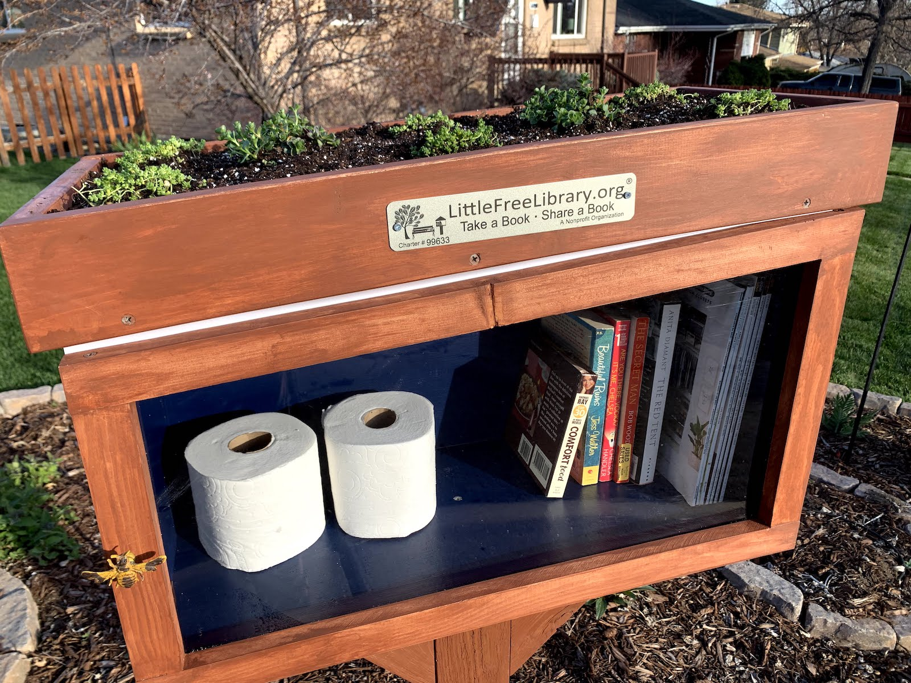

Little Free Library and community efforts

This is one of the thousands of Little Free Libraries, scattered all across the country (Jessica LaRusso/5280 Magazine).
The Little Free Library is a nonprofit organization that’s widely known for its mini-libraries on a post. What makes them great for getting books into people’s hands is that anyone can get a book from a number of these libraries for free, hence the title.
Maze is admittedly a huge fan of the Little Free Library initiative but acknowledged that there are challenges to setting up a library in a community, including cost and contents. For example, the cheapest Little Free Library kit starts at $189.95.
“It depends on the community to fund the initial building of it, have a property that it can stay on and keep it filled,” Maze said. “That’s why sometimes you tend to see them in more affluent areas, because those people can afford to build one, they own the property.”
This can be seen on the Little Free Library World Map. While there are Little Free Libraries all over Baltimore, there’s a higher concentration down the middle of the city and in North Baltimore and fewer in East and West Baltimore.
Storybook Maze has contacted an organization about helping to supply a steady supply of relatable children’s books to a Little Free Library. In addition, anyone with children’s books can donate them to a Little Free Library.
The Book Thing of Baltimore also gives away free books once a month on the weekends, and are also accepting book donations.
'Kids need to see themselves in books'
One of the ways that Maze is thinking about getting children’s books to as many kids as possible is using vending machines to dispense free books instead of snacks. She plans to place these vending machines at high-traffic areas, including laundromats, general markets, hospitals and more.
Maze hopes that by reaching out to community leaders and organizations, she can eventually schedule and set up more free pop-up book stands like the one she initially established with Tendea Family, an organization that works to support Black communities in Baltimore. With every pop-up book stand, she uses her knowledge as a librarian to curate books to meet the community’s needs.
One thing that Maze, McGuffee, and Khatib agree on is that the books that kids should get reflect their experiences and identity, and that kids deserve to see themselves in all types of media.
“It really engages (kids) more when they can see themselves in the books or in the media that they’re consuming,” Maze said.
Khatib said that when she grew up as a brown girl in Kentucky along the Bible Belt, she experienced an information and representation desert because the reading material was mostly white- and Christian- centered.
“I was constantly looking and seeking, trying to find, ‘Is there anybody in any books that looks like me, that has an experience similar to mine?’” Khatib said. “When we set out to start Red Emma’s, it was not just me ... there were other people who had similar experiences.”
McGuffee believes that if kids of all backgrounds are properly represented in children’s books, a greater number will become lifelong readers and develop the skills that come with that.
“Kids need to see themselves in books, and they need to see other kids that look like them are avid readers,” McGuffee said. “They need to see authors that look like them, represent them, all of that.”
Maze’s typical workday involves reaching out to local businesses seeking a permanent spot for her vending machines, and doing more outreach with pop-up bookstands during community events. She believes it’s worthwhile work.
“When I was reading one day on the stoop, I opened the page and the little girl stopped me from turning the page. She was just staring at an image of herself: that book also had a little Black girl living, and she was just transfixed,” Maze said. “That really affirmed for me that I’m doing important work.”